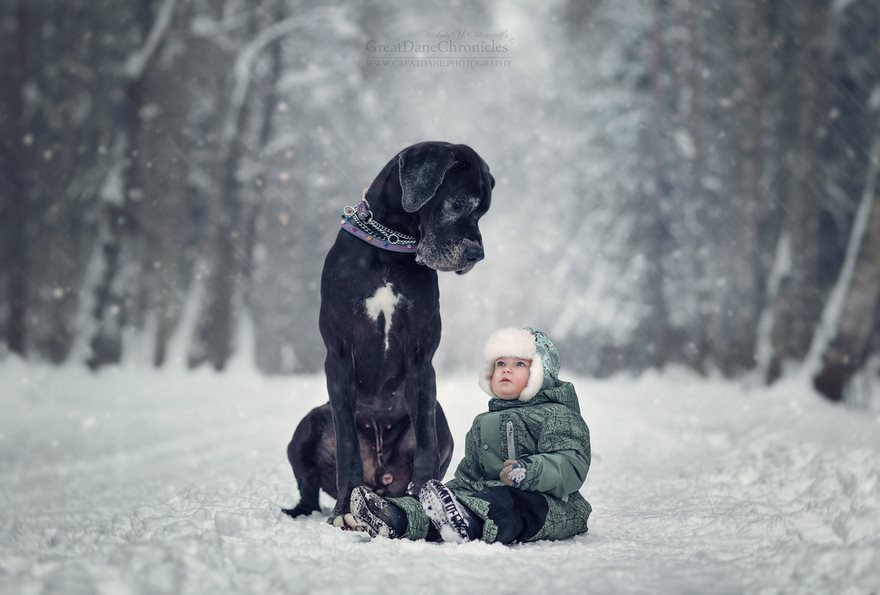

Dogs Are Amazing!

Companion & Winter Explorer

Unique Personality
From snuggling at home to performing incredible feats, dogs have been our partners for thousands of years. Here are just a few of the many roles and talents they bring to our lives:
- 🐕 Companionship & Emotional Support: Therapy dogs soothe anxiety, visit hospitals, and offer unconditional love.
- 🏃 Sport & Agility: Border Collies and Jack Russell Terriers excel in obstacle courses, frisbee, and flyball.
- 🚓 Detection & Patrol: Bloodhounds, Beagles, and German Shepherds use their noses to sniff out contraband, missing persons, and hazards.
- 🚑 Search & Rescue: Newfoundlands and Labrador Retrievers dive into water or scramble through debris to find people in need.
- 🦮 Service & Assistance: Golden Retrievers and Labradors guide the blind, alert diabetics to glucose changes, and assist wheelchair users.
- 🐑 Herding & Farm Work: Australian Shepherds and Border Collies manage livestock with razor‑sharp focus and precision.
- 🎾 Fetch & Play: Almost every breed enjoys games, whether it’s a tennis ball in the park or tug‑of‑war in the backyard.
- 📷 Social Media Stars: From “derpy” faces to majestic portraits, dogs light up Instagram and TikTok around the globe.
No matter their size, shape, or “good looks,” dogs have a place in our hearts—and in our homes—for the joy, service, and endless surprises they bring.